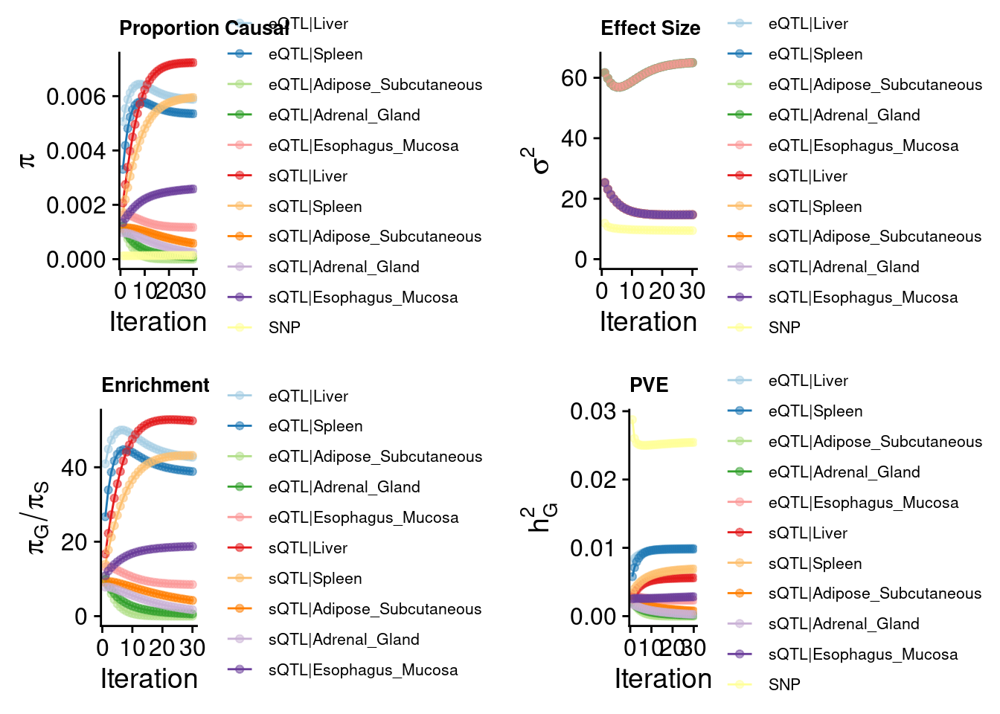

Last updated: 2024-09-05
Checks: 6 1
Knit directory: multigroup_ctwas_analysis/
This reproducible R Markdown analysis was created with workflowr (version 1.7.0). The Checks tab describes the reproducibility checks that were applied when the results were created. The Past versions tab lists the development history.
The R Markdown file has unstaged changes. To know which version of
the R Markdown file created these results, you’ll want to first commit
it to the Git repo. If you’re still working on the analysis, you can
ignore this warning. When you’re finished, you can run
wflow_publish to commit the R Markdown file and build the
HTML.
Great job! The global environment was empty. Objects defined in the global environment can affect the analysis in your R Markdown file in unknown ways. For reproduciblity it’s best to always run the code in an empty environment.
The command set.seed(20231112) was run prior to running
the code in the R Markdown file. Setting a seed ensures that any results
that rely on randomness, e.g. subsampling or permutations, are
reproducible.
Great job! Recording the operating system, R version, and package versions is critical for reproducibility.
Nice! There were no cached chunks for this analysis, so you can be confident that you successfully produced the results during this run.
Great job! Using relative paths to the files within your workflowr project makes it easier to run your code on other machines.
Great! You are using Git for version control. Tracking code development and connecting the code version to the results is critical for reproducibility.
The results in this page were generated with repository version 064975b. See the Past versions tab to see a history of the changes made to the R Markdown and HTML files.
Note that you need to be careful to ensure that all relevant files for
the analysis have been committed to Git prior to generating the results
(you can use wflow_publish or
wflow_git_commit). workflowr only checks the R Markdown
file, but you know if there are other scripts or data files that it
depends on. Below is the status of the Git repository when the results
were generated:
Ignored files:
Ignored: .Rhistory
Ignored: results/
Unstaged changes:
Modified: analysis/LDL_single_multi_compare_oldpip.Rmd
Staged changes:
Modified: analysis/index.Rmd
Note that any generated files, e.g. HTML, png, CSS, etc., are not included in this status report because it is ok for generated content to have uncommitted changes.
These are the previous versions of the repository in which changes were
made to the R Markdown
(analysis/LDL_single_multi_compare_oldpip.Rmd) and HTML
(docs/LDL_single_multi_compare_oldpip.html) files. If
you’ve configured a remote Git repository (see
?wflow_git_remote), click on the hyperlinks in the table
below to view the files as they were in that past version.
| File | Version | Author | Date | Message |
|---|---|---|---|---|
| Rmd | 2053ed2 | XSun | 2024-08-29 | update |
| html | 2053ed2 | XSun | 2024-08-29 | update |
library(ctwas)
library(EnsDb.Hsapiens.v86)
library(ggplot2)
library(RColorBrewer)
library(dplyr)
library(logging)
library(readr)
library(data.table)
load("/project2/xinhe/shared_data/multigroup_ctwas/weights/E_S_A_mapping_updated.RData")
ens_db <- EnsDb.Hsapiens.v86
trait <- "LDL-ukb-d-30780_irnt"
gwas_n <- 343621
source("/project/xinhe/xsun/r_functions/combine_pip_old_ctwas.R")
source("/project/xinhe/xsun/r_functions/anno_finemap_res_old_ctwas.R")
sum_pve_across_types <- function(ctwas_parameters) {
# Round the group_pve values
pve <- round(ctwas_parameters$group_pve, 4)
pve <- as.data.frame(pve)
# Extract SNP PVE for later use
SNP_pve <- pve["SNP", ]
# Add type and context columns
pve$type <- sapply(rownames(pve), function(x) { unlist(strsplit(x, "[|]"))[1] })
pve$context <- sapply(rownames(pve), function(x) { unlist(strsplit(x, "[|]"))[2] })
# Remove rows with NA values and sort
pve <- na.omit(pve)
pve <- pve[order(rownames(pve)), ]
# Aggregate PVE by type
df_pve <- aggregate(pve$pve, by = list(pve$type), FUN = sum)
colnames(df_pve) <- c("type", "total_pve")
df_pve$total_pve <- round(df_pve$total_pve, 4)
# Add context-specific columns
for (context in unique(pve$context)) {
context_pve <- aggregate(pve$pve, by = list(pve$type, pve$context), FUN = sum)
context_pve <- context_pve[context_pve$Group.2 == context, ]
colnames(context_pve)[3] <- context
df_pve <- merge(df_pve, context_pve[, c("Group.1", context)], by.x = "type", by.y = "Group.1", all.x = TRUE)
}
# Insert SNP PVE
SNP_row <- c("SNP", SNP_pve, rep(0, ncol(df_pve) - 2))
df_pve <- rbind(df_pve, SNP_row)
# Convert to numeric except for the type column
df_pve[, -1] <- lapply(df_pve[, -1], as.numeric)
# Sum all rows and add a sum_pve row
sum_row <- colSums(df_pve[, -1], na.rm = TRUE)
sum_row <- c("total_pve", sum_row)
df_pve <- rbind(df_pve, sum_row)
# Clean up row names and return
row.names(df_pve) <- NULL
return(df_pve)
}
palette <- c(brewer.pal(12, "Paired"), brewer.pal(12, "Set3"), brewer.pal(6, "Dark2"))
pve_pie_chart <- function(pve_vector, palette=NULL, title) {
# Create data frame for plotting
data <- data.frame(
Group = names(pve_vector),
Value = pve_vector
)
# Calculate percentages
data$Percentage <- round(100 * data$Value / sum(data$Value), 1)
# Set palette if not specified
if (is.null(palette)) {
palette <- brewer.pal(min(8, length(data$Group)), "Set3")
}
# Create pie chart
ggplot(data, aes(x = "", y = Value, fill = Group)) +
geom_bar(stat = "identity", width = 1, color = "white") +
coord_polar(theta = "y") + # This transforms the bar chart into a pie chart
scale_fill_manual(values = palette, name = "Group") +
labs(title = title, x = NULL, y = NULL) +
theme_void() +
theme(plot.title = element_text(hjust = 0.5),
legend.position = "right",
legend.title = element_text(face = "bold"),
legend.text = element_text(size = 12)) +
geom_text(aes(label = paste(Percentage, "%", sep="")), position = position_stack(vjust = 0.5))
}Weights:
single group: Liver, eQTL
multi group: Liver, Spleen, Adipose_Subcutaneous, Adrenal_Gland, Esophagus_Mucosa; eQTL + sQTL
Main function
results_dir_single <- paste0("/project/xinhe/xsun/multi_group_ctwas/xxxintalk/results_predictdb_main_single/",trait,"/")
finemap.res.single <- readRDS(paste0(results_dir_single,trait,".ctwas.res.RDS"))
snp_map.single <- readRDS(paste0(results_dir_single,trait,".snp_map.RDS"))
res.single <- finemap.res.single$finemap_res
param.single <- finemap.res.single$param
make_convergence_plots(param.single, gwas_n)
| Version | Author | Date |
|---|---|---|
| 2053ed2 | XSun | 2024-08-29 |
ctwas_parameters.single <- summarize_param(param.single, gwas_n)
group_size.single <- data.frame(group = names(ctwas_parameters.single$group_size),
group_size = as.vector(ctwas_parameters.single$group_size))
group_size.single <- t(group_size.single)
DT::datatable(group_size.single,caption = htmltools::tags$caption( style = 'caption-side: topleft; text-align = left; color:black;','Group size'),options = list(pageLength = 5) )annotated_finemap_res.single <- anno_finemap_res_old(finemap_res = res.single,
snp_map = snp_map.single,
gene_annot = E_S_A_mapping,
use_gene_pos = "mid",
filter_protein_coding_genes = T,
drop_unannotated_genes = T,
filter_cs = T)2024-09-05 14:58:26 INFO::Annotating ctwas finemapping result ...
2024-09-05 14:58:38 INFO::keep only protein coding genes
2024-09-05 14:58:38 INFO::keep only results in credible sets
2024-09-05 14:58:38 INFO::add gene_name and gene_type
2024-09-05 14:58:38 INFO::use gene mid positions
2024-09-05 14:58:38 INFO::add SNP positionsres_gene.single <- annotated_finemap_res.single[annotated_finemap_res.single$type != "SNP",]
combined_pip_by_context.single <- combine_gene_pips_old(finemap_res = annotated_finemap_res.single,
by = "type", digits = 4)
highpip.single <- combined_pip_by_context.single[combined_pip_by_context.single$combined_pip > 0.8,]
DT::datatable(highpip.single,caption = htmltools::tags$caption( style = 'caption-side: topleft; text-align = left; color:black;','Genes with PIP > 0.8'),options = list(pageLength = 5) )results_dir_multi <- paste0("/project/xinhe/xsun/multi_group_ctwas/xxxintalk/results_predictdb_main_multi/",trait,"/")
finemap.res.multi <- readRDS(paste0(results_dir_multi,trait,".ctwas.res.RDS"))
snp_map.multi <- readRDS(paste0(results_dir_multi,trait,".snp_map.RDS"))
res.multi <- finemap.res.multi$finemap_res
param.multi <- finemap.res.multi$param
make_convergence_plots(param.multi, gwas_n,colors = palette)
| Version | Author | Date |
|---|---|---|
| 2053ed2 | XSun | 2024-08-29 |
ctwas_parameters.multi <- summarize_param(param.multi, gwas_n)
group_size.multi <- data.frame(group = names(ctwas_parameters.multi$group_size),
group_size = as.vector(ctwas_parameters.multi$group_size))
group_size.multi <- t(group_size.multi)
DT::datatable(group_size.multi,caption = htmltools::tags$caption( style = 'caption-side: topleft; text-align = left; color:black;','Group size'),options = list(pageLength = 5) )para.multi <- sum_pve_across_types(ctwas_parameters.multi)
DT::datatable(para.multi,caption = htmltools::tags$caption( style = 'caption-side: topleft; text-align = left; color:black;','Heritability contribution by contexts'),options = list(pageLength = 5) )pve_vector.multi <- as.numeric(para.multi$total_pve[1:3])
names(pve_vector.multi) <- para.multi$type[1:3]
pve_pie_chart(pve_vector.multi, title = "Pie Chart of PVE across Types", palette)
| Version | Author | Date |
|---|---|---|
| 2053ed2 | XSun | 2024-08-29 |
annotated_finemap_res.multi <- anno_finemap_res_old(finemap_res = res.multi,
snp_map = snp_map.multi,
gene_annot = E_S_A_mapping,
use_gene_pos = "mid",
filter_protein_coding_genes = T,
drop_unannotated_genes = T,
filter_cs = T)2024-09-05 14:59:00 INFO::Annotating ctwas finemapping result ...
2024-09-05 14:59:05 INFO::keep only protein coding genes
2024-09-05 14:59:05 INFO::keep only results in credible sets
2024-09-05 14:59:05 INFO::add gene_name and gene_type
2024-09-05 14:59:05 INFO::split PIPs for traits mapped to multiple genes
2024-09-05 14:59:05 INFO::use gene mid positions
2024-09-05 14:59:05 INFO::add SNP positionsres_gene.multi <- annotated_finemap_res.multi[annotated_finemap_res.multi$type != "SNP",]
combined_pip_by_context.multi <- combine_gene_pips_old(finemap_res = annotated_finemap_res.multi,
by = "type", digits = 4)
highpip.multi <- combined_pip_by_context.multi[combined_pip_by_context.multi$combined_pip > 0.8,]
DT::datatable(highpip.multi,caption = htmltools::tags$caption( style = 'caption-side: topleft; text-align = left; color:black;','Genes with PIP > 0.8'),options = list(pageLength = 5) )combined_pip_by_context.multi.new <- combine_gene_pips_new(finemap_res = annotated_finemap_res.multi,
by = "type", digits = 4)
merge_combined_pip <- merge(combined_pip_by_context.multi, combined_pip_by_context.multi.new, by = "gene_name")
colnames(merge_combined_pip) <- c("gene_name", "combined_pip_old","eQTL_pip","sQTL_pip","combined_pip_new","eQTL_pip.y","sQTL_pip.y")
merge_combined_pip <- merge_combined_pip[,c("gene_name", "eQTL_pip","sQTL_pip","combined_pip_old","combined_pip_new")]
ggplot(merge_combined_pip, aes(x = combined_pip_old, y = combined_pip_new)) +
geom_point() + # Scatter plot
geom_abline(intercept = 0, slope = 1, color = "red", linetype = "dashed") + # Add y = x line
labs(x = "Combined PIP Old", y = "Combined PIP New") +
theme_minimal()DT::datatable(merge_combined_pip,caption = htmltools::tags$caption( style = 'caption-side: topleft; text-align = left; color:black;','Comparing old combined pip and new combined pip'),options = list(pageLength = 5) )overlap <- highpip.multi[highpip.multi$gene_name %in% highpip.single$gene_name,]
sprintf("the number of genes reported by single group analysis: %s", nrow(highpip.single))[1] "the number of genes reported by single group analysis: 33"sprintf("the number of genes reported by multi group analysis: %s", nrow(highpip.multi))[1] "the number of genes reported by multi group analysis: 65"sprintf("the number of overlapped gene: %s", nrow(overlap))[1] "the number of overlapped gene: 24"DT::datatable(overlap,caption = htmltools::tags$caption( style = 'caption-side: topleft; text-align = left; color:black;','overlapped genes'),options = list(pageLength = 5) )multi_unique <- combined_pip_by_context.multi[!combined_pip_by_context.multi$gene_name %in% overlap$gene_name,]
multi_unique <- multi_unique[multi_unique$combined_pip > 0.8,]
DT::datatable(multi_unique,caption = htmltools::tags$caption( style = 'caption-side: topleft; text-align = left; color:black;','Unique genes -- multi group'),options = list(pageLength = 5) )unique_detail <- res_gene.multi[!res_gene.multi$gene_name %in%overlap$gene_name,]
unique_detail <- unique_detail[unique_detail$gene_name %in% highpip.multi$gene_name,]
save(unique_detail, file = "/project/xinhe/xsun/multi_group_ctwas/xxxintalk/unique_detail.rdata")
sessionInfo()R version 4.2.0 (2022-04-22)
Platform: x86_64-pc-linux-gnu (64-bit)
Running under: CentOS Linux 7 (Core)
Matrix products: default
BLAS/LAPACK: /software/openblas-0.3.13-el7-x86_64/lib/libopenblas_haswellp-r0.3.13.so
locale:
[1] C
attached base packages:
[1] stats4 stats graphics grDevices utils datasets methods
[8] base
other attached packages:
[1] data.table_1.14.2 readr_2.1.2
[3] logging_0.10-108 dplyr_1.1.4
[5] RColorBrewer_1.1-3 ggplot2_3.5.1
[7] EnsDb.Hsapiens.v86_2.99.0 ensembldb_2.20.2
[9] AnnotationFilter_1.20.0 GenomicFeatures_1.48.3
[11] AnnotationDbi_1.58.0 Biobase_2.56.0
[13] GenomicRanges_1.48.0 GenomeInfoDb_1.39.9
[15] IRanges_2.30.0 S4Vectors_0.34.0
[17] BiocGenerics_0.42.0 ctwas_0.4.11
loaded via a namespace (and not attached):
[1] colorspace_2.0-3 rjson_0.2.21
[3] ellipsis_0.3.2 rprojroot_2.0.3
[5] XVector_0.36.0 locuszoomr_0.2.1
[7] fs_1.5.2 rstudioapi_0.13
[9] farver_2.1.0 DT_0.22
[11] ggrepel_0.9.1 bit64_4.0.5
[13] fansi_1.0.3 xml2_1.3.3
[15] codetools_0.2-18 cachem_1.0.6
[17] knitr_1.39 jsonlite_1.8.0
[19] workflowr_1.7.0 Rsamtools_2.12.0
[21] dbplyr_2.1.1 png_0.1-7
[23] compiler_4.2.0 httr_1.4.3
[25] assertthat_0.2.1 Matrix_1.5-3
[27] fastmap_1.1.0 lazyeval_0.2.2
[29] cli_3.6.1 later_1.3.0
[31] htmltools_0.5.2 prettyunits_1.1.1
[33] tools_4.2.0 gtable_0.3.0
[35] glue_1.6.2 GenomeInfoDbData_1.2.8
[37] rappdirs_0.3.3 Rcpp_1.0.12
[39] jquerylib_0.1.4 vctrs_0.6.5
[41] Biostrings_2.64.0 rtracklayer_1.56.0
[43] crosstalk_1.2.0 xfun_0.41
[45] stringr_1.5.1 lifecycle_1.0.4
[47] irlba_2.3.5 restfulr_0.0.14
[49] XML_3.99-0.14 zlibbioc_1.42.0
[51] zoo_1.8-10 scales_1.3.0
[53] gggrid_0.2-0 hms_1.1.1
[55] promises_1.2.0.1 MatrixGenerics_1.8.0
[57] ProtGenerics_1.28.0 parallel_4.2.0
[59] SummarizedExperiment_1.26.1 LDlinkR_1.2.3
[61] yaml_2.3.5 curl_4.3.2
[63] memoise_2.0.1 sass_0.4.1
[65] biomaRt_2.54.1 stringi_1.7.6
[67] RSQLite_2.3.1 highr_0.9
[69] BiocIO_1.6.0 filelock_1.0.2
[71] BiocParallel_1.30.3 rlang_1.1.2
[73] pkgconfig_2.0.3 matrixStats_0.62.0
[75] bitops_1.0-7 evaluate_0.15
[77] lattice_0.20-45 purrr_1.0.2
[79] labeling_0.4.2 GenomicAlignments_1.32.0
[81] htmlwidgets_1.5.4 cowplot_1.1.1
[83] bit_4.0.4 tidyselect_1.2.0
[85] magrittr_2.0.3 R6_2.5.1
[87] generics_0.1.2 DelayedArray_0.22.0
[89] DBI_1.2.2 withr_2.5.0
[91] pgenlibr_0.3.3 pillar_1.9.0
[93] whisker_0.4 KEGGREST_1.36.3
[95] RCurl_1.98-1.7 mixsqp_0.3-43
[97] tibble_3.2.1 crayon_1.5.1
[99] utf8_1.2.2 BiocFileCache_2.4.0
[101] plotly_4.10.0 tzdb_0.4.0
[103] rmarkdown_2.25 progress_1.2.2
[105] grid_4.2.0 blob_1.2.3
[107] git2r_0.30.1 digest_0.6.29
[109] tidyr_1.3.0 httpuv_1.6.5
[111] munsell_0.5.0 viridisLite_0.4.0
[113] bslib_0.3.1